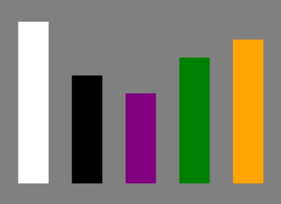
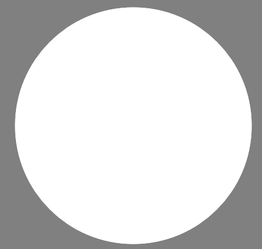
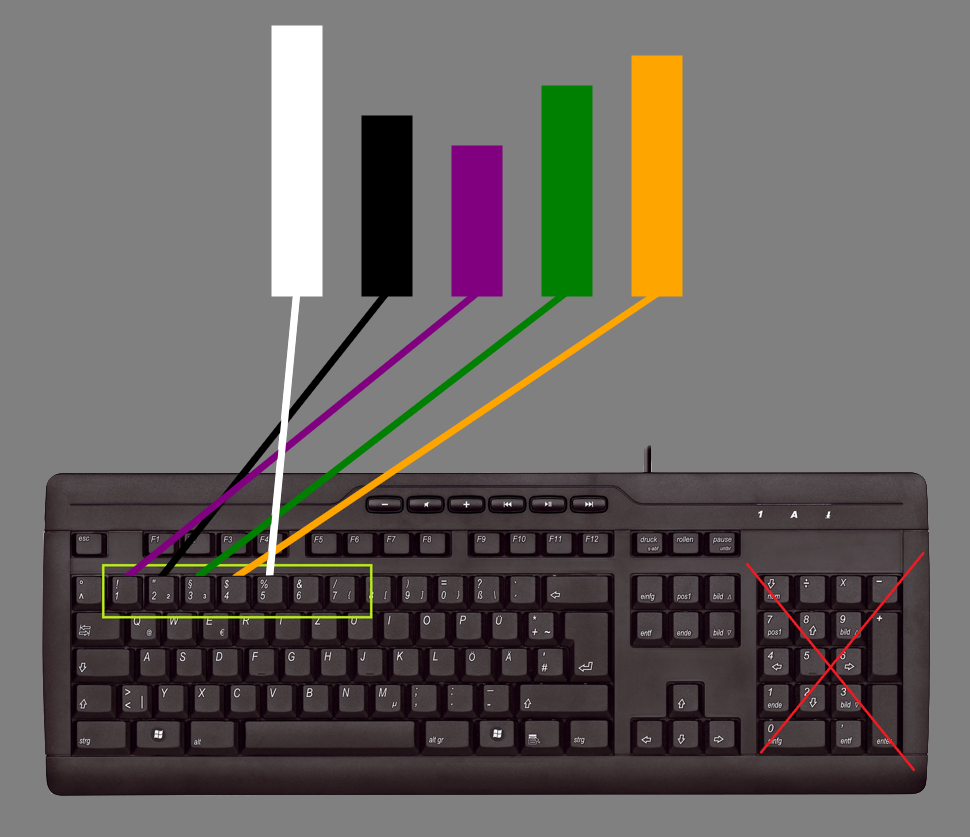
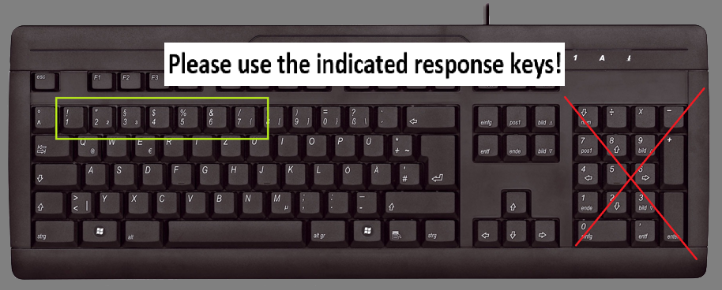
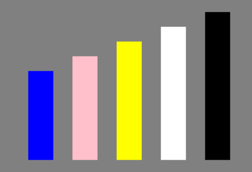

<!DOCTYPE html>
<html lang="en">
    <head>
        
        <meta charset="UTF-8">
        <title>Study: Sort it Out</title>
        <script src="jspsych-6.1.0/jspsych.js"></script>
        <script src="jspsych-psychophysics-1.3/jspsych-psychophysics.js">
        //I got this from http://jspsychophysics.hes.kyushu-u.ac.jp/
        //should be cited: de Leeuw, J.R. jsPsych: A JavaScript library for creating behavioral experiments in a Web browser. Behav Res 47, 1–12 (2015). https://doi.org/10.3758/s13428-014-0458-y
        // and the kuroki paper (its findable at the link and also in my zotero)          
        </script>
        <script src="jspsych-6.1.0/plugins/jspsych-html-keyboard-response.js"></script>
        <script src="jspsych-6.1.0/plugins/jspsych-image-button-response.js"></script>
        <script src="jspsych-6.1.0/plugins/jspsych-html-button-response.js"></script>
        <script src="jspsych-6.1.0/plugins/jspsych-image-keyboard-response.js"></script>
        <script src="jspsych-6.1.0/plugins/jspsych-instructions.js"></script>
        <link href="jspsych-6.1.0/css/jspsych.css" rel="stylesheet" type="text/css"></link>  

        <!-- packeges from shuchen -->
        <script type="text/javascript" src="./js/jquery-1.11.3.js"></script>
        <script type="text/javascript" src="./js/jquery-ui-1.12.1.min.js"></script>
        
    </head>
    <style>
        body {
                background-color:grey ;
                color: black;
        }
        
    </style>
    <body> 
    </body>
    

    <script>

        assignmentID = turkGetParam('assignmentId');
        workerID = turkGetParam('workerId');

        // generate a random subject ID with 15 characters
        var subject_id = jsPsych.randomization.randomID(15);

        //construct next page link with worker id and assignment id in the URI
        nextPage = "comprehension_check.html?" + "workerId=" + workerID + "&assignmentId=" + assignmentID + "&subject_id=" + subject_id; 

        // measure the time at the start of the experiment 
        // The getTime() method returns the number of milliseconds between midnight of January 1, 1970 and the specified date.
        var date = new Date()
        var startTime = date.getTime()

        var dateString = date.getDate().toString()+"_"+date.getMonth().toString()+"_"+date.getFullYear().toString()+"_"+date.getHours().toString()+"_"+date.getMinutes().toString()+"_"+date.getSeconds().toString()

        

        // -----------                                    instructions                                                  -----\\


        var betweenBlocks = "<p>Score for the last Block: </p>"

        var betweenBlocks2 = "<p> <br> Press spacebar to continue to the next Block. <br> Please remember to respond as <b>fast</b> as you can! </p>"

        var last_block = "<p> <br> Congratulations! You made it through the practice blocks. <br> Press spacebar to continue to the comprehension questions.</p>"


        // -------      all the FUNCTIONS that javascript doesnt have so I have to write them myself #Imisspython      -------\\
 
        // function to generate random number from 0 to max-1
        function getRandomInt(max) {
            return Math.floor(Math.random() * Math.floor(max));
        }

        //this function generates a random list of integers between zero and max-1 without repetitions of length length
        function getRandomIndexes(length, max=9) {
            var indexes = []
            if (length > max){
                return "the length is bigger than the max number, which makes this function quite impossible"
            }
            while (indexes.length < length){
                a = getRandomInt(max)
                if (indexes.includes(a)){}
                else{
                    indexes.push(a)
                }

            }
            return indexes
        }


        // this function takes a list as input and returns a list of length length which is a shuffeled sublist of the original list (there is also the option of specifying a max index)
        function getShuffeledSublist(list, length, max=list.length){

            //check if the input is ok and if not return feedback
            if (length > list.length){
                return "the length is bigger than the list, which makes this function quite impossible"
            }else if (max > list.length){
                return "the max is bigger than the list, which makes this function quite impossible"
            }else if (length > max){
                return "the length is bigger than the max number, which makes this function quite impossible"
            }  

            //create a shuffeled sublist
            var shuffeledSublist = []
            var indexes = getRandomIndexes(length, max)
            for (i = 0; i < length; i++) {
                shuffeledSublist.push(list[indexes[i]]);
            }
            return shuffeledSublist
        }

        // this function allows me to create copies of lists and objects, so that modefying the copy does not change the original (copied thi of the internet: https://stackoverflow.com/questions/728360/how-do-i-correctly-clone-a-javascript-object)
        function clone(obj) {
            var copy;

            // Handle the 3 simple types, and null or undefined
            if (null == obj || "object" != typeof obj) return obj;

            // Handle Date
            if (obj instanceof Date) {
                copy = new Date();
                copy.setTime(obj.getTime());
                return copy;
            }

            // Handle Array
            if (obj instanceof Array) {
                copy = [];
                for (var i = 0, len = obj.length; i < len; i++) {
                    copy[i] = clone(obj[i]);
                }
                return copy;
            }

            // Handle Object
            if (obj instanceof Object) {
                copy = {};
                for (var attr in obj) {
                    if (obj.hasOwnProperty(attr)) copy[attr] = clone(obj[attr]);
                }
                return copy;
            }

            throw new Error("Unable to copy obj! Its type isn't supported.");
        }


        // function to shuffel arrays
        function shuffel(a) {
            var j, x, i;
            for (i = a.length - 1; i > 0; i--) {
                j = Math.floor(Math.random() * (i + 1));
                x = a[i];
                a[i] = a[j];
                a[j] = x;
            }
            return a;
        }

        // this function gets an arrac of length len which contains len consecutive heights
        function getConsecutiveHeights(max = max_bars,len){
            var list = [];
            var start = getRandomInt(max-len+1)
            var heights = []
            for (var i = 0; i < max; i++) {
                list.push(i);
            }

            for (var k = start; k< start+len;k++){
                heights.push(rect_height[k])
            }
            return heights
        }
        

        // -------      all my lovely VARIABLES for the sequence      -------\\

        
     
        var x = window.innerWidth / 2;  // x center of the screen
        var x_scale = 90   // variable to adjust the positioning
        var y = window.innerHeight / 2;  // y center of the screen
        var x_width = 50

        // height setting for the bars
        var base_height = 150
        var scale_height = 30
        var query_size = 100 // radius of the query

        // variables for reward
        var earned = 8
        var base_reward = 3


        //max number of bars 
        var max_bars = 7 

        var repetitions = 1 // reduced number of repetitions for the practive blocks


        // settings for the canvas: 
        var canvas_h = base_height+scale_height*max_bars+30//window.innerHeight-200
        var canvas_w = x_scale*max_bars+3*x_width//window.innerWidth-200
        var canvas_x_center = canvas_w/2

        // maximum query position for the query structure position 
        var queryStructureMax = 3

        //anser keys for the bars
        var allPos = [49,50,51,52,53,54,55,56,57] // this is the code for the keys from 1 to 9
        var possiblePos = allPos.slice(0,max_bars) // the numberkey from 1 to max_bars

        // stimulus height for the feedback stimulus 
        var fbHeight = 300

        

        // list with all posible postions for the bars
        var rect_x_positions = [
            canvas_x_center,
            canvas_x_center-1*x_scale, 
            canvas_x_center+1*x_scale,
            canvas_x_center-2*x_scale, 
            canvas_x_center+2*x_scale,
            canvas_x_center-3*x_scale,
            canvas_x_center+3*x_scale,
            canvas_x_center-4*x_scale, 
            canvas_x_center+4*x_scale]

        // list with all posible 
        var rect_height = [
            base_height, 
            base_height+scale_height,
            base_height+2*scale_height,
            base_height+3*scale_height, 
            base_height+4*scale_height,
            base_height+5*scale_height, 
            base_height+6*scale_height,
            base_height+7*scale_height,
            base_height+8*scale_height
        ]

        var colors = [
            "red",
            "blue",
            "green",
            "black",
            "white",
            "purple",
            "yellow",
            "orange",
            "saddlebrown",
            "pink"
        ]

        
        //list containing all the length for all trials 

        //function which makes me the list 
        function makeSeqLens(max_bars,repetitions){
            seqLens = []
            for (i = 0; i < max_bars; i++){
                for (k = 0; k < repetitions; k++){
                    seqLens.push(i+1)
                }
            }
            return seqLens
        }
        var sequenceLens = makeSeqLens(max_bars,repetitions)

        var timeline =[]


        // -------      some more, somewhat specific functions just for this little experiment      -------\\

        // function that a random sequence of the inputted size. Also returns the color, height and position sequence (which in a way is contained in the generated rect sequence already though)    ------- for all conditions
        // because for all conditions we are creating the same sequences (just with different colors)
        function generateSequence(length = max_bars){
            var rectSequenceNoStructureExp = [] //the list which contains a squence of all generated rectangeles
            var rectSequenceNoStructureCont = [] //the list which contains a squence of all generated rectangeles
            var colorSequenceNoStructureExp = getShuffeledSublist(colors,length)
            var colorSequenceNoStructureCont = getShuffeledSublist(colors,length)
            
            

            var heightSequence = getConsecutiveHeights(max = max_bars,len= length)  //these are consecutive positions, but they are not shuffeled
            var positonSequence = getShuffeledSublist(rect_x_positions.slice(0,length),length)
            for (i = 0; i < length; i++) {
                // NO structure condition
                var rect_object_NoStructureExp= {
                    obj_type: 'rect', // means a rectangle
                    startX: positonSequence[i], // location in the canvas
                    startY: canvas_h/2+100-(heightSequence[i]/2-100),
                    width: x_width, // of the rectangle
                    height: heightSequence[i],
                    line_color: colorSequenceNoStructureExp[i],
                    fill_color: colorSequenceNoStructureExp[i],
                    show_start_time: 0 // from the trial start (ms)#,
                
                }
                var rect_object_NoStructureCont= {
                    obj_type: 'rect', // means a rectangle
                    startX: positonSequence[i], // location in the canvas
                    startY: canvas_h/2+100-(heightSequence[i]/2-100),
                    width: x_width, // of the rectangle
                    height: heightSequence[i],
                    line_color: colorSequenceNoStructureCont[i],
                    fill_color: colorSequenceNoStructureCont[i],
                    show_start_time: 0 // from the trial start (ms)#,
                
                }
                
                rectSequenceNoStructureExp.push(rect_object_NoStructureExp)
                rectSequenceNoStructureCont.push(rect_object_NoStructureCont)
                
            }
            return [rectSequenceNoStructureExp, colorSequenceNoStructureExp, heightSequence, positonSequence, rectSequenceNoStructureCont, colorSequenceNoStructureCont,]

        }


        // returns two sequences, 1. the randomised rect sequence plus 2. a matched control sequence ------- no structure condition
        function generatePairSequence(length){
            allSequences = generateSequence(length)
            rectSequenceSortNoStructureExp = allSequences[0]
            rectSequenceSortNoStructureCont = allSequences[4]
            sortedHeights = allSequences[2]


            // this differentiates between the no strcuture and the structure in the query condition
            var randomInt = getRandomInt(allSequences[1].length)
            queryColorNoStructureExp = allSequences[1][randomInt]
            queryColorNoStructureCont = allSequences[5][randomInt]

            sortedPositions = allSequences[3].sort(function(a, b){return a-b}) // dont ask me why I need the thing in the () but it works...
            
            rectSeq = clone(rectSequenceSortNoStructureCont)
            sortedNoStruct =[]
        
            
            for (i = 0; i < sortedHeights.length; i++) {
                for (k = 0; k < rectSeq.length; k++) {
                    if (rectSeq[k].height==sortedHeights[i]){
                        var a = rectSeq[k]
                        
                        a.startX = sortedPositions[i]
                        
                        sortedNoStruct.push(a)
                        
                        
                    }
                }   
            }
            
            return [rectSequenceSortNoStructureExp, sortedNoStruct, queryColorNoStructureExp, queryColorNoStructureCont]
        }

        // function that generates two lists. The first contains all the trials for the experimental condition and the second contains all the matched trials for the control condition      -------no structure condition
        // The function takes a list of sequence length as input
        function generateAllSequences(sequenceLens,){
            var expSeqNoStruct = []       // all experimental sequences  ---no Structure

            var contSeqNoStruct = []      // all control sequence
            var querysNoStruct = []       // all querys                  --- no structure
            var querysNoStructCont = []

            var oneSeq = []
            for (let i in sequenceLens){                       // get one paired sewuence for each length determined in the sequenceLens array
                oneSeq = generatePairSequence(sequenceLens[i])  // get a pair sequence
                expSeqNoStruct.push(oneSeq[0])                        //add them to the right list
                contSeqNoStruct.push(oneSeq[1])

                // create stimuli for the querys
                var query_objectNoStructExp = {
                    obj_type: 'circle',
                    startX: canvas_w/2, // location in the canvas
                    startY: canvas_h/2+40,
                    radius: query_size,
                    line_color: oneSeq[2], // You can use the HTML color name instead of the HEX color.
                    fill_color: oneSeq[2],
                    show_start_time: 0 // from the trial start (ms)
                }

                 // create stimuli for the querys
                 var query_objectNoStructCont = {
                    obj_type: 'circle',
                    startX: canvas_w/2, // location in the canvas
                    startY: canvas_h/2+40,
                    radius: query_size,
                    line_color: oneSeq[3], // You can use the HTML color name instead of the HEX color.
                    fill_color: oneSeq[3],
                    show_start_time: 0 // from the trial start (ms)
                }
                
                querysNoStruct.push(query_objectNoStructExp)
                querysNoStructCont.push(query_objectNoStructCont) 

                
            }


            return [expSeqNoStruct, contSeqNoStruct, querysNoStruct, querysNoStructCont]
        }

        //this function shuffels the generated sequences according to the shuffel order arrays
        function getShufffeledSequence(sequence, shuffelList){
            shuffeledSequence =[]
            for (let i in shuffelList){ 
                shuffeledSequence.push(sequence[shuffelList[i]])
            }
            return shuffeledSequence
        };


        // function that gives feedback based on whether the answer is correct or not

        // -------      create the order for the trials of the no structure blocks      -------\\

        // -------      set up for the trials of the no structure blocks      -------\\

        // no structure condition
        var seqs = generateAllSequences(sequenceLens)
        var experimentalSeq = seqs[0]
        var controlSeq = seqs[1]
        var allQuerys = seqs[2]
        var allQuerysCont = seqs[3]


        // ----------------------------------------------- get the correct positions for all thre conditions -----------------------------------------\\

        // get the correct answers using the already sorted control sequences               ------------- no structure condition
        var allCorrPos = []
        
        for (let i in controlSeq){
            var a = []
            for (let m in controlSeq[i]){
                a.push(controlSeq[i][m].fill_color)
            }
            for (let k in a){
                if (a[k]==allQuerysCont[i].fill_color){
                    allCorrPos.push(possiblePos[k])
                }
            }
        }


        

        // ------------------------- randomise the order and set up the final variables ----------------------------\\
        
        //these array contains a list of ints from 0 to the amount of trails per block in a shuffeled order, determining the order of the trials
        var expOrder = shuffel(Array.from(Array(sequenceLens.length).keys()))
        var contOrder = shuffel(Array.from(Array(sequenceLens.length).keys()))

    

        //shuffel the varibales for each block according to the generated random order
        var shuffeledExpSeq = getShufffeledSequence(experimentalSeq, expOrder)
        var shuffeledExpQuery = getShufffeledSequence(allQuerys, expOrder)
        var shuffeledExpCorrPos = getShufffeledSequence(allCorrPos, expOrder)
        var shuffeledContSeq = getShufffeledSequence(controlSeq, contOrder)
        var shuffeledContQuery = getShufffeledSequence(allQuerysCont, contOrder)
        var shuffeledContCorrPos = getShufffeledSequence(allCorrPos, contOrder)


        //This puts all the varibales for each block in one array to make it easier to access them
        var ExpNoStructure = [shuffeledExpSeq,shuffeledExpQuery,shuffeledExpCorrPos]
        var ContNoStructure = [shuffeledContSeq,shuffeledContQuery,shuffeledContCorrPos]


        var blockOrder = [ExpNoStructure,  ContNoStructure]
        var blockNamesOrder = ["noStructureExp", "noStructureCont"]

        // create a timeline variable which contains the randomized sequences which were generated by generateAllSequences also spit out a list with the changed order
        var cross = {
            obj_type: 'cross',
            startX: canvas_w/2, // location in the canvas
            startY: canvas_h/2,
            line_length: 50,
            line_width: 6,
            line_color: 'black', // You can use the HTML color name instead of the HEX color.
            fill_color: 'black',
            show_start_time: 0 // from the trial start (ms)
        }

        // fication cross for fgurther usage
        var fixationcross = {
            type: 'psychophysics',
            canvas_width: canvas_w,
            canvas_height: canvas_h,
            stimuli: [cross],
            choices: jsPsych.NO_KEYS,
            trial_duration: 1000,
            data:{
                Stimulus_type: "fixationcorss"
            }
                
        };

        

        //function for getting the color sequence
        var getColorSequence = function(barSequence){
            col = []
            for (let k in barSequence){
                col.push(barSequence[k].fill_color)
            }
            return col
        }

        //function for getting the position sequence
        var getPosSequence = function(barSequence){
            pos = []
            for (let k in barSequence){
                pos.push(barSequence[k].startX.toString())
            }
            return pos
        }

        //function for getting the height sequence
        var getHeightSequence = function(barSequence){
            height = []
            for (let k in barSequence){
                height.push(barSequence[k].height.toString())
            }
            return height
        }


        // ---------------------------------  get some instructions -----------------------------------------//

        var instructionseqs = generateAllSequences([6])
        var unsorted_instructions = instructionseqs[0]
        var sorted_instructions = instructionseqs[1]
        var query_instructions = instructionseqs[2]

        var a = []
        for (let m in sorted_instructions){
            a.push(sorted_instructions[0][m].fill_color)
        }
        for (let k in a){
            if (a[k]==query_instructions[0].fill_color){
                var corrPos = possiblePos[k]
            }
        }
        
        var instructions1 = "<h3>1. Instructions and practice trials<br></h3>"+
            "<p>In the following, we will explain the experiment to you and let you try out the task on a few practice trials.<br></p>"
        var instructions1_2 = "<p>But before we start a short request:<br><br></p>"+
            "<h1>Please DO NOT restart the page</h1>" +
            "<p><br> If you do, you will have to start over again and we will not be able to reward you for the time you already spent.<br>"+
            "In case of technical difficulties please contact us directly.<br> Now that that is cleared up, let us move on to the actual task :)</p>"
        var instructions2 = "<p>The experiment consists of 6 blocks.<br>"+
            "Each block has 35 trials and is about 4 minutes long in total. <br>After each block you will receive feedback on your performance and you will get the chance to take a break if you wish. Please do not take breaks within a block."+
            " <br>In half of the blocks you will see a <b>scrambled</b> sequences of colored bars with different heights.<br>"+
            "In the other half the bars are <b>pre-sorted</b>.</p>"
        var instructions3 = "<p>For the <b>scrambled</b> sequences of bars (like the one below), please sort the bars from the smallest to the tallest in your head and remember the position of each bar in the sorted order.<br>"+
            "Each color will only appear once within each sequence.<br>"+
            " Once you think you remembered the order, you can press the <b>spacebar</b> to continue.<br>"+
            "Please try to be as <b>fast</b> as possible.</p>"+
            "</img>"
        var instructions4 = "<p>Next you will see a colored circle like the one below."+
            " Please provide the position (after sorting) of the bar with the same color by using the <b>number keys</b> on your keyboard.<br>"+
            " <b>1 represents the position of the smallest bar. 2 represents the second smallest bar, and so forth.</b><br>"+
            " Accordingly, <b>5</b> is the correct response for the sequence we just showed you.<br>"+
            " The next page will show you why.</p>"+
            "</img>"
        var instructions4_2 = "<p>This is the correct match between bars and positions. Accordingly, when shown a white circle, 5 is the correct response.</p>"+
            "</img>"
        var instructions5 = "<p>Please try to always respond with a <b>valid number key</b>.<br>"+
            "In case you forget and use the wrong response keys, you will see the reminder below after your response.<br>"+
            "Invalid responses will not be counted towards your bonus, so please be careful.</p>"+
            "</img>"
        var instructions6 = "<p>For the blocks with the <b>pre-sorted</b> sequences of bars (like the one below), you just need to remember the sequences as they are shown.<br>"+
            "Here too, each color will only appear once within each sequence.<br>"+
            "Once you think you remembered the order, you can once again press <b>spacebar</b> to continue.<br>"+
            "Please try to be as <b>fast</b> as possible here as well.</p>"+
            "</img>"
        var instructions7 = "<p>Next, you will also see a colored circle like the one below."+
            " Please provide the position of the bar with the same color by using the <b>number keys</b> we showed you in the instructions.<br>"+
            " Once again, 1 represents the position of the smallest bar.<br>"+
            " Accordingly, for the sequence we just showed you <b>4</b> is the correct response (if you forgot why please feel free to check again, by pressing the <b>Previous</b> button).</p>"+
            "</img>"
        var instructions8 = "<p>The <b>number of bars</b> will vary between different trials. So somtimes you will see only 1 bar and sometimes up to 7.</p>"
        var instructions9 = "<p><b>The bonus of up to $8.00 depends on the percentage of trials you get correct.</b><br>"+
        "If you get 100% correct you will get the entire $8.00, whereas if you get only 50% correct you will only get a bonus of $4.00. The base fee of $3.00 is independent of your performance.</p>"
        var instructions10 = "<p>Now that you have a general idea of what the experiment looks like, let's give it a try.<br>"+
            "Once you hit <b>Next</b> two shortened practice blocks will start. One with <b>scrambled</b> sequences and one with <b>pre-sorted</b> sequences.<br>"+
            "It is ok if you get a few trials wrong, but please try to be as <b>accurate</b> and as <b>fast</b> as possible.<br> You will receive feedback about your performance of the end of each block."
            //+
            //"You will need to get at least <b>70%</b> of the total practice trials correct to continue to the experimental phase.<p/>"
        var instructions11 = "Ready?"
        

        // instruction for the very beginning
        var instruction_trial_1 = {
            type: 'instructions',
            pages: [
                instructions1,
                //instructions1_2,
                instructions2,
                instructions3,
                instructions4,
                instructions4_2,
                instructions5,
                instructions6,
                instructions7,
                instructions8,
                instructions9,
                instructions10,
                instructions11
            ],
            show_clickable_nav: true
        }

       
        // announcement of a new block and time to wait
        var new_block = {
            type: 'html-keyboard-response',
            choices:['space'],
            stimulus: function(){
                return betweenBlocks+ Math.round((percentage*100)).toString()+ "%" +betweenBlocks2 // this gives feedback about how many trials were correct in the last block
            }
        };

        timeline.push(instruction_trial_1)

        // the end
        var end = {
            type: 'html-keyboard-response',
            choices:['space'],
            stimulus: function(){
                if(total_percentage > 0.0){
                    return betweenBlocks+ "<b>" +Math.round((percentage*100)).toString()+ "%<br></b>" +"Your total score is:" + "<b><br>" +Math.round((total_percentage*100)).toString()+ "%</b>" + last_block// this gives feedback about how many trials were correct in the last block
                }else{
                    return betweenBlocks+ "<b>" +Math.round((percentage*100)).toString()+ "%</b>" +"<p><br>Your total score is:<br></p>" + "<b>" +Math.round((total_percentage*100)).toString()+ "%</b>" 
                }
            },
            data:{
                MTurkID: workerID,
                Stimulus_type: "end_of_practice",
                TrialType: "practice_trials",
                save: true,
                assignmentID: assignmentID,
                date: dateString,
                subject_id: subject_id
               
            },
            on_finish: function(data){
                var date2 = new Date()
                var endTime = date2.getTime()
                data.timeMs = date2-date // total time of the task in milliseconds
                data.timeMin = (date2-date)/60000 // total time of the task in Minutes
                data.score = total_percentage
            }
        };

        
        // counter, for calculating the final reward
        var total_percentage = 0
        block = 0
        num = 0

        // --------------------------------- start the practice blocks ------------------------------------ //
        // this creates the timline for all the blocks contained in the blockOrder variable 
        for (let o in blockOrder){
            block +=1
            percentage = 0 // pcounts the ratio of correct trials

            for (let i in blockOrder[o][0]){
                num += 1
              
                var expSequencePresentation = {
                    type: 'psychophysics',
                    canvas_width: canvas_w,
                    canvas_height: canvas_h,
                    stimuli: blockOrder[o][0][i],
                    choices: ['space'],
                    prompt: "<p><br>Please press <b>spacebar</b> to continue.</p>",
                    data: {
                        Conditions: blockNamesOrder[o],
                        TrialID: function (){
                            if (blockNamesOrder[o]=="noStructureExp"){
                                return expOrder[i]
                            }else if (blockNamesOrder[o]=="noStructureCont"){
                                return contOrder[i]
                            }
                        },
                        Trial_index: num,
                        Stimulus_type: "bars",
                        Number_of_Bars: blockOrder[o][0][i].length,
                        color_sequence: getColorSequence(blockOrder[o][0][i]).join(),
                        position_sequence:getPosSequence(blockOrder[o][0][i]).join(),
                        heights: getHeightSequence(blockOrder[o][0][i]).join(),
                        Query_color: blockOrder[o][1][i].fill_color,
                        Correct_Position: blockOrder[o][2][i]-48,
                        correct: "false",
                        Block: block,
                        MTurkID: workerID,
                        TrialType: "practice_trials",
                        save: true,
                        assignmentID: assignmentID,
                        date: dateString,
                        response_position: 000,
                        subject_id: subject_id
                    }
                    };
                var expQueryPresentation = {
                    type: 'psychophysics',
                    stimuli: [blockOrder[o][1][i]],
                    canvas_width: canvas_w,
                    canvas_height: canvas_h,
                    choices: jsPsych.ALL_KEYS,
                    prompt: "<p><br>Please press the <b>number key</b> corresponding to the correct position of the bar with the above color.</p>",
                    data:{
                        Conditions: blockNamesOrder[o],
                        TrialID: function () {
                            if (blockNamesOrder[o]=="noStructureExp"){
                                return expOrder[i]
                            }else if (blockNamesOrder[o]=="noStructureCont"){
                                return contOrder[i]
                            }
                        },
                        Trial_index: num,
                        Stimulus_type: "query",
                        Query_color: blockOrder[o][1][i].fill_color,
                        Number_of_Bars: blockOrder[o][0][i].length,
                        Correct_Position: blockOrder[o][2][i]-48,
                        color_sequence: getColorSequence(blockOrder[o][0][i]).join(),
                        position_sequence:getPosSequence(blockOrder[o][0][i]).join(),
                        heights: getHeightSequence(blockOrder[o][0][i]).join(),
                        Block: block,
                        MTurkID: workerID,
                        TrialType: "practice_trial",
                        save: true,
                        assignmentID: assignmentID,
                        date: dateString,
                        subject_id: subject_id
                    },
                    on_finish: function(data) {
                        //check if response is valid and if it is if it is correct
                        data.response_position = data.key_press-48
                        jsPsych.data.get().last(3).filter({Stimulus_type: 'bars'}).values()[0].response_position = data.key_press-48

                        if (i == 0){
                            percentage = 0
                        }
                        if (possiblePos.indexOf(data.key_press)>=0){
                            
                            if(data.key_press == blockOrder[o][2][i]){
                                data.correct = "true";
                                // change the data of the bars
                                jsPsych.data.get().last(3).filter({Stimulus_type: 'bars'}).values()[0].correct = "true"

                                percentage += 1/blockOrder[o][0].length
                                total_percentage += 1/(blockOrder[o][0].length*blockOrder.length)
                            } else {
                                data.correct = "false";
                                // change the data of the bars
                                jsPsych.data.get().last(3).filter({Stimulus_type: 'bars'}).values()[0].correct = "false"
                            }
                        }else{
                            data.correct = "invalid response"
                            // change the data of the bars
                            jsPsych.data.get().last(3).filter({Stimulus_type: 'bars'}).values()[0].correct = "invalid response"
                        }
                    
                  


                    }  
                };

                var feedback = {
                    type: 'image-keyboard-response',
                    choices: jsPsych.NO_KEYS,
                    stimulus_height: function(){
                        var last_trial_correct = jsPsych.data.get().last(1).values()[0].correct;
                        if(last_trial_correct== "invalid response"){
                            return 300
                        } else {
                            return fbHeight
                        }
                    },
                    maintain_aspect_ration: true,
                    trial_duration: function(){
                        var last_trial_correct = jsPsych.data.get().last(1).values()[0].correct;
                        if(last_trial_correct== "invalid response"){
                            return 5000
                        } else {
                            return 1000
                        }
                    },
                    stimulus: function(){
                        var last_trial_correct = jsPsych.data.get().last(1).values()[0].correct;
                        if(last_trial_correct== "invalid response"){
                            return "Stimuli/invalidResponse.png"
                        }else if(last_trial_correct == "true"){
                            return 'Stimuli/right.png';
                        } else {
                            return "Stimuli/wrong.png";
                        }
            
                    },
                };

                timeline.push(fixationcross, expSequencePresentation,fixationcross, expQueryPresentation, feedback)
            };
            
            if (o == blockOrder.length-1){
                timeline.push(end)
            }else{
                timeline.push(new_block)
            }
        }


        function turkGetParam(name) {
            var regexS = "[\?&]" + name + "=([^&#]*)";
            var regex = new RegExp(regexS);
            var tmpURL = document.location.href;
            var results = regex.exec(tmpURL);
            if (results == null) {
                return "";
            } else {
                return results[1];
            }
        }


        data_sent = false
        jsPsych.init({
            timeline: timeline,
            // on_trial_finish: function() {
            //     saveDataToDb()
            //     console.log("data_saved:" + jsPsych.data.get().last(1).json())    
            // },
            show_progress_bar: true,
            on_finish: function() {
                if (!data_sent) {
                    data_sent = true;
                    
                    console.log("end")
                    

                    window.location.href = nextPage; //send them to the next page


                };

            },

        })

        var all_data = jsPsych.data.get("rt");
    </script>


</html>